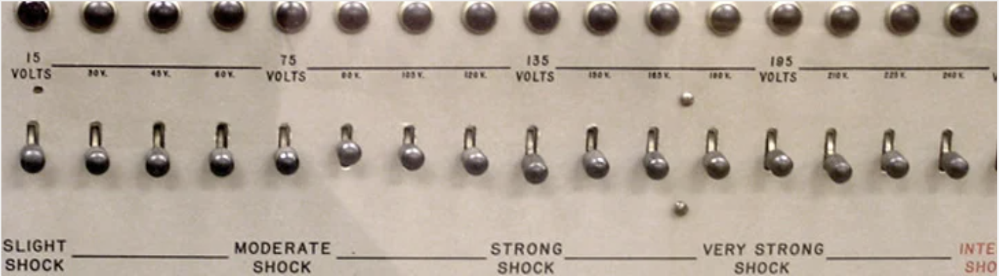
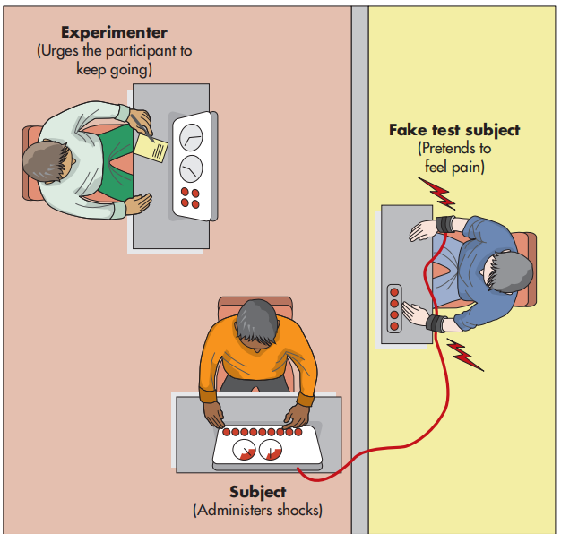

⚡ Milgram (1963)
服从行为研究
📑 Contents 目录
1️⃣ Main Assumptions in Context（社会心理学取向的主要假设）
Social Approach Core Assumptions
How others shape our behaviour, thoughts & emotions
Humans as Social Actors（人作为社会行动者）
Social psychologists are interested in understanding the factors that influence how we behave in social situations. The main assumptions of the social approach to psychology are that:
- Our behaviour, cognitions and emotions can be influenced by the actual, implied or imagined presence of others.
- All of our behaviour, cognitions and emotions can be influenced by social contexts, social environments and groups.
These assumptions introduce the idea that other people have an enormously powerful effect on how we live our lives. We might experience this in the different social roles（社会角色） we play as students, children, workers, volunteers, etc. For example, a manager may behave formally in their office environment, greeting colleagues with handshakes and wearing smart work clothes. However, when visiting their mother they change roles to a more informal one, greeting her with a hug and dressing casually.
Social Pressure（社会压力）
The influence of others is not limited to their actual presence. We may act as though others are with us even when they are not—feelings of excitement before a party come from imagining friends' presence. These powerful influences on thoughts, feelings and behaviour are collectively known as social pressure（社会压力）.
Social pressure can take the form of direct influence such as orders, threats or demands, but may also involve social approval or reward, or feeling the need to conform to expectations or obey directions from another person.
Obedience（服从）
Many social psychologists consider obedience one of the most basic parts of the structure of social worlds. An agreed system of authority and obedience is necessary for humans to live and work together. However, obedience to authority can also have negative consequences, including aggression towards others.
The concept of destructive obedience（破坏性服从） is of special interest. During World War II, millions of innocent people were systematically murdered on command. The Holocaust required the obedience of many ordinary citizens as well as Nazi officers and guards.
⚠️ Historical Context
Milgram himself was born into a Jewish family. He wrote: "Obedience is the psychological mechanism that links individual action to political purpose... from 1933–45 millions of innocent persons were systematically slaughtered on command." This personal motivation drove his research.
逻辑链：人是社会性动物 → 他人的存在（实际/想象/暗示）深刻影响我们的行为 → 这种影响称为 Social Pressure → 其中一种特殊形式是 Obedience（服从）——听从权威人物的命令。
- Social Roles（社会角色）：同一个人在不同场景下表现不同（经理 vs 儿子），说明行为由情境决定，不仅仅是性格。
- Social Pressure 可以是直接的（命令、威胁），也可以是间接的（从众压力、想获得认可）。
- Destructive Obedience（破坏性服从）：当服从导致伤害他人时——二战大屠杀就是最极端的例子，这也是 Milgram 研究的核心动机。
💡 考试要点：CIE 考试常问 "outline two assumptions of the social approach"。答案模板：(1) Others influence our behaviour/thoughts/emotions; (2) We are shaped by social contexts/groups/roles.
- Two assumptions of social approach: (1) influenced by others' presence (actual/implied/imagined), (2) shaped by social contexts/environments Must Know
- Key term: destructive obedience = obeying authority that causes harm to others Must Know
- Social role example: same person behaves differently as manager vs. child at home Common Q
- AO1: Describe assumptions clearly; AO2: Link to why Milgram's study matters for understanding obedience AO2 Gold
2️⃣ The Psychology Being Investigated（研究涉及的心理学）
Social pressure describes the influence of a person or group on another person or group. This might involve direct forms of influence such as orders, threats or demands, but may also involve social approval or reward. The concept of destructive obedience, in particular, is of special interest to social psychologists.
（为什么普通人会服从权威人物的命令，即使这些命令会伤害他人？）
"When you think of the long and gloomy history of man, you will find more hideous crimes have been committed in the name of obedience than have ever been committed in the name of rebellion."
— C. P. Snow (1961), quoted by Milgram in the original paper
3️⃣ Background（研究背景）
The "Germans Are Different" Hypothesis
Milgram wanted to prove: it's about situation, not nationality
The 'Germans Are Different' Hypothesis（"德国人不同"假说）
One theory used to explain the Holocaust is that German citizens possessed defective personal traits which made extreme levels of obedience possible. This individual argument suggests that Germans are somehow different from others—the so-called 'Germans are different' hypothesis（"德国人不同"假说）.
Stanley Milgram sought to challenge this hypothesis. He proposed a situational explanation（情境解释）: that many people in a similar situation would harm or even kill other human beings under authority orders, regardless of nationality.
Predictions Before the Study（实验前的预测）
Before his study, Milgram described the procedure to psychology students and colleagues, asking them what percentage of participants would deliver maximum voltage shocks. Their predictions:
- All respondents predicted only an insignificant minority would go through to the end of the shock series.
- Estimates ranged from 0% to 3%.
- The class mean was 1.2%.
- Colleagues felt few if any subjects would go beyond "Very Strong Shock" (195–240V).
Individual vs Situational Explanations（个体解释与情境解释）
This debate concerns whether a person's individual characteristics (personality) or environmental conditions more strongly influence behaviour. Milgram's study challenges personality-based explanations because all participants administered at least 300V. He attributed this to situational variables: legitimacy of the setting and authority of the experimenter.
核心争论：为什么二战时普通德国人会执行屠杀命令？
- Individual Explanation（个体解释）：德国人有某种"缺陷人格"或独特的"权威型人格"（Authoritarian Personality, Adorno 1950）→ 只有德国人会这样。
- Situational Explanation（情境解释）（Milgram 的立场）：任何人在类似的情境下都会服从 → 不是德国人的问题，是情境的力量。
预测 vs 实际：心理学家预测只有 0-3% 的人会施加最高电压 → 实际结果 **65%** 完全服从到 450V！这个巨大反差证明了情境的力量远超人们预期。
💡 考试答题模板："Milgram challenged the 'Germans are different' hypothesis by showing that ordinary Americans (not Germans) showed high levels of obedience (65%), supporting a situational rather than individual explanation."
- 'Germans are different' hypothesis = individual/personality explanation for Holocaust obedience Must Know
- Predicted obedience rate: 0–3% (class mean 1.2%) → Actual: 65% Must Know
- Milgram supported situational explanation over individual explanation Must Know
- AO2 evaluation point: This debate continues — 35% DID defy, so individual differences matter too AO2 Gold
4️⃣ Aim（研究目的）
The aim was to investigate how obedient individuals would be to orders received from a person in authority. Specifically, Milgram wanted to know whether people show obedience even when it would result in physical harm to another person (destructive obedience 破坏性服从). To test this, he developed a laboratory procedure involving a researcher ordering the participant to give electric shocks to a victim.
（研究普通人在权威命令下会对他人施加电击到什么程度。）
To investigate how far ordinary people would obey an authority figure when ordered to deliver electric shocks to another person.
（调查普通人在权威命令下会对他人施加多强的电击。）
5️⃣ Method（研究方法）
Controlled Observation
Lab setting · 40 male participants · Shock generator apparatus
Research Method and Design（研究方法与设计）
This study is a controlled observation（控制性观察）. It took place in a laboratory where all variables and measurements were controlled while participant behaviour was observed and recorded.
Milgram originally described it as a laboratory experiment; however, it contained no manipulated (independent) variables. Each participant underwent the same procedure with no control condition. He later replicated the procedure in other studies using different variations to allow comparisons.
Sample（样本）
The subjects were 40 males between the ages of 20 and 50, recruited through newspaper advertisement in the New Haven area. This was a volunteer sample（志愿样本）.
| Occupation 职业 | Age 年龄 | % of Total 占比 | ||
|---|---|---|---|---|
| 20–29 | 30–39 | 40–50 | ||
| Workers, skilled and unskilled 工人（熟练/非熟练） | 4 | 5 | 6 | 37.5% |
| Sales, business and white-collar 销售、商业、白领 | 3 | 6 | 7 | 40.0% |
| Professional 专业人士 | 1 | 5 | 3 | 22.5% |
| % of Total 总计 | 20% | 40% | 40% | 100% |
In addition, 43 undergraduate students from Yale University completed the same experiment without payment. Although details of this additional sample are not included in the main paper, their results were very similar to those obtained by paid participants.
Personnel and Locale（人员与地点）
The experiment was conducted on the grounds of Yale University in the elegant interaction laboratory. This detail is relevant to the perceived legitimacy（感知合法性） of the experiment—in later variations, dissociating the experiment from the university affected performance.
The Experimenter（实验者）
The role of experimenter was played by a 31-year-old high school biology teacher. His manner was impassive（冷漠的）, and his appearance somewhat stern（严厉的） throughout the experiment. He was dressed in a gray technician's coat（灰色技术员外套）.
The Victim / Confederate（受害者/同谋）
The victim was played by a 47-year-old accountant（47岁会计师）, trained for the role. He was of Irish-American stock（爱尔兰裔美国人）, whom most observers found mild-mannered and likable（温和且讨人喜欢）.
Dependent Measures（因变量测量）
The primary dependent measure for any subject is the maximum shock administered before refusing to continue. In principle this ranges from 0 (refuses first shock) to 30 (administers highest shock). A subject who breaks off early is termed a defiant subject（反抗者）; one who complies fully is termed an obedient subject（服从者）.
Additional records: sessions recorded on magnetic tape, occasional photographs through one-way mirrors, notes on unusual behaviour, timing devices measuring latency and duration of shocks.
研究类型：Controlled Observation（控制性观察）——不是真实验（没有 IV 操作），但严格控制环境条件后观察行为。考试时根据题目要求选择术语。
样本：n=40 男性，20-50 岁，Volunteer Sample（志愿样本），New Haven 地区报纸招募。另有 43 名耶鲁大学生 unpaid 对照组。
人员：
- Experimenter（实验者）：31 岁高中生物老师，穿灰色技术员外套，冷漠严厉
- Confederate / Victim（同谋/受害者）：47 岁会计师，爱尔兰裔，温和讨人喜欢
地点：Yale University（耶鲁大学）——增加感知合法性（后续变体中脱离耶鲁后服从率下降）
因变量 DV：被试施加的最高电压（0-30 档 = 15V-450V）。服从者 = 达到 450V；反抗者 = 提前终止。
- Method = Controlled observation (or quasi-experiment) — no IV manipulated, all Ps had identical procedure Must Know
- Sample: n=40 males, 20-50yrs, volunteer sample via newspaper ad Must Know
- DV = maximum voltage administered before refusal Common Q
- AO3: Why not a true experiment? No control condition, no IV manipulation AO2 Gold
5️⃣🅱️ Procedure（实验程序）
6-Step Standardised Procedure
Arrival → Role allocation → Setup → Sample shock → Practice → Main run
Procedure（程序步骤）
Step 1: Arrival and Payment 到达与报酬
Each participant was promised $4.50 for taking part. Crucially, subjects were told that payment was simply for coming to the laboratory, and that the money was theirs no matter what happened after they arrived.
Step 2: Role Allocation 角色分配
Participants arrived individually and were introduced to another man believed to be another participant. This man was actually a confederate（同谋/托儿）. Both were told they would be allocated roles of 'teacher' or 'learner' in an experiment about punishment and learning.
They drew slips of paper from a hat to determine roles—but the drawing was rigged（抽签是假的）. Both slips said "Teacher," ensuring the naive subject was always the teacher and the accomplice always the learner.
Step 3: Setup 设置
Immediately after drawing, the learner was taken to an adjacent room and strapped into an "electric chair" apparatus. Straps were explained as preventing excessive movement during shocking. An electrode was attached to the learner's wrist with electrode paste "to avoid blisters and burns."
The teacher was presented with the shock generator（电击发生器）:
- 30 switches ranging from 15 volts to 450 volts
- Verbal labels: Slight Shock → Moderate Shock → Strong Shock → Very Strong Shock → Intense Shock → Extreme Intensity Shock → Danger: Severe Shock → XXX (final two switches)
- Pressing a switch illuminated a red pilot light, produced buzzing, flashed a blue "voltage energizer" light, swung the meter dial, and sounded relay clicks
- Labeled: Shock Generator, Type ZLB, Dyson Instrument Company, Waltham, Mass. Output 15 Volts – 450 Volts


Step 4: Sample Shock 样本电击
Each naive subject received a sample shock of 45 volts before beginning. This shock came from a real 45-volt battery wired into the generator, applied to the subject's own wrist. This further convinced subjects of the machine's authenticity. No subject suspected the instrument was merely simulated.
Step 5: Preliminary Run (Practice) 练习阶段
Pretests revealed that reading words and administering shocks required practice. Therefore, immediately preceding the regular run, the teacher completed a preliminary series of 10 words:
- 3 neutral words (learner answers correctly) → no shock needed
- 7 wrong answers → shocks administered, maxing at 105 volts (Moderate Shock)
- Almost all subjects mastered the procedure by the end of the preliminary run.
Step 6: Regular Run 正式实验
Subjects were presented with a second word list. The experimenter instructed:
"When you get to the bottom of the list, repeat it over again, and continue giving shocks, until the learner has learned all the pairs correctly... start from 15 volts and increase the shock level one step each time the learner gives a wrong answer."
The Learning Task 学习任务
The teacher read pairs of words aloud, then tested the learner's recognition. The learner followed a pre-set script: approximately three wrong answers to one correct answer.
The Learner's Protest Script（学习者抗议脚本）
This is the feedback from the victim—a predetermined set of responses based on ~3 wrong : 1 correct ratio. The learner's protests began far earlier than 300V:
| Voltage 电压 | Label 标签 | Learner's Response 学习者反应 |
|---|---|---|
| 75V | Slight Shock | Grunts（呻吟） |
| 90V | Slight Shock | Grunts（呻吟） |
| 105V | Moderate Shock | Grunts（呻吟） |
| 120V | Moderate Shock | Shouts "Hey, this really hurts!"（喊："嘿，真的很痛！"） |
| 135V | Strong Shock | A agonized scream（痛苦的尖叫） |
| 150V | Strong Shock | "Experimenter! That's all! Get me out of here! I told you I had heart trouble! My heart's starting to bother me now! Get me out of here, my heart!" （"实验者！够了！放我出去！我告诉过我有心脏病！我的心脏现在开始难受了！放我出去！"） |
| 165V | Strong Shock | (Intense screaming 尖叫) |
| 180V | Very Strong Shock | "I can't stand the pain! Let me out of here!"（"我受不了了！放我出去！"） |
| 195V | Very Strong Shock | (Screams 尖叫) |
| 210V | Intense Shock | "I absolutely refuse to go on. Let me out of here!"（"我绝对拒绝继续。放我出去！"） |
| 225V | Intense Shock | (Screams 尖叫) |
| 240V | Intense Shock | (Screams 尖叫) |
| 255V | Intensity Shock | (Agonized scream 痛苦尖叫) |
| 270V | Extreme Intensity | (Agonized scream + desperate pounding 绝望地捶墙) |
| 285V | Extreme Intensity | (Agonized scream + pounding 痛苦尖叫+捶墙) |
| 300V | Extreme Intensity | Kicks violently on the wall 暴力踢墙 — then NO RESPONSE / SILENCE 无回应/沉默 |
| 315V | Danger: Severe | STILL SILENT 仍然沉默 |
| 330V – 450V | Danger → XXX | STILL SILENT 仍然沉默 (no answers reappear on signal box) |
Protest Timeline（抗议时间线）
The learner began protesting at 75V (grunting), shouted about heart trouble at 150V, demanded release at 180V, and started pounding the wall at 270V. At 300V he kicked the wall violently and then fell completely silent.
Verbal Prods（言语提示）
If the subject turned to the experimenter for advice or indicated unwillingness to continue, the experimenter responded with a sequence of "prods", using as many as necessary:
| Prod # | Standard Prods 标准提示语 |
|---|---|
| Prod 1 | Please continue. / Please go on. （请继续。） |
| Prod 2 | The experiment requires that you continue. （实验要求你继续。） |
| Prod 3 | It is absolutely essential that you continue. （你必须绝对继续。） |
| Prod 4 | You have no other choice, you must go on. 你别无选择，必须继续。 |
Prods were always made in sequence. Only if Prod 1 failed could Prod 2 be used. If the subject refused after Prod 4, the experiment terminated. The experimenter's tone was firm but not impolite. The sequence restarted each time the subject balked.
Special Prods（特殊提示语）
For specific questions, the experimenter gave tailored responses:
| If the subject asked 如果被试问... | Experimenter's response 实验者回答 |
|---|---|
| "Will the learner suffer permanent physical injury?" （"学习者会不会受永久性身体伤害？"） | "Although the shocks may be painful, there is no permanent tissue damage, so please go on." （"虽然电击可能很痛，但不会造成永久组织损伤，所以请继续。"） → Then Prods 2, 3, 4 if needed |
| "The learner doesn't want to go on" （"学习者不想继续了"） | "Whether the learner likes it or not, you must go on until he has learned all the word pairs correctly. So please go on." （"不管学习者喜不喜欢，你必须继续直到他学会所有词对。所以请继续。"） → Then Prods 2, 3, 4 if needed |
Interview and Dehoax（访谈与事后解释）
After the experiment, subjects were interviewed using open-ended questions, projective measures, and attitude scales. Subjects estimated how painful the final shocks were on a 14-point scale ("Not at all painful" to "Extremely painful"). After the interview, procedures assured subjects left in a state of well-being—a friendly debriefing（事后解释） reconciled any ill feelings.
程序六步法：
- 到达付款 $4.50 → 强调"钱已经给你了，无论后面发生什么"
- 假抽签分配角色 → 被试永远是 Teacher，Confederate（同谋） 永远是 Learner
- Learner 被绑电椅 → 电极贴手腕（"避免水泡和烧伤"）→ Teacher 看 30 档电击器
- 45V 样本电击 → 被试自己体验一次，确信机器是真的
- 练习阶段 10 题 → 最高 105V，确保被试掌握操作流程
- 正式实验 → Learner 按 ~3错:1对 比例反应
Protest Timeline（抗议时间线）——必考！：
- 75V：首次抗议（呻吟）← 不是 300V！
- 150V：喊心脏病
- 180V：要求释放
- 270V：绝望捶墙
- 300V：暴力踢墙 → 然后完全沉默
四个标准提示语：Please continue → Experiment requires → Absolutely essential → No other choice
两个特殊提示语：关于永久性伤害 / 学习者不想继续
- 6 steps: Arrival ($4.50) → Role allocation (rigged draw) → Setup (learner strapped) → Sample shock (45V) → Practice run (10 words) → Regular run Must Know
- First protest at 75V (NOT 300V!) — grunting Must Know
- Heart trouble shout at 150V, demands release at 180V, pounding wall at 270V, kicks wall then silence at 300V Must Know
- 4 standard prods — know them verbatim in order Common Q
- 2 special prods: permanent injury question + "learner doesn't want to continue" Common Q
- Learner response ratio: ~3 wrong : 1 correct Context
7️⃣ Results（研究结果）
Shockingly High Obedience
65% fully obedient · Mean 368V · All reached 300V
Subjects Accepted Situation as Real 被试相信情境真实
With few exceptions, subjects were convinced of reality—that they were administering real shocks and the most potent shocks were extremely painful. On the 14-point post-experimental scale:
- Modal response: 14 (Extremely painful)
- Mean: 13.42 out of 14
Signs of Extreme Tension 极度紧张的迹象
Many subjects showed signs of nervousness, especially when administering more powerful shocks. In many cases tension reached extremes rarely seen in sociopsychological studies:
- Profuse sweating, trembling, stuttering（大量出汗、颤抖、口吃）
- Biting lips, groaning, digging fingernails into flesh
- Nervous laughter: 14 of 40 subjects showed definite signs of nervous laughter/smiling
- 3 subjects experienced full-blown, uncontrollable seizures—one so violent the experiment had to be halted
Distribution of Maximum Shocks 最高电击分布
It had been conjectured that persons would not administer shocks beyond "Very Strong Shock". The obtained distribution deviated radically from prediction:
| Verbal Designation 文字标签 | Voltage 电压(V) | # Subjects 人数 |
|---|---|---|
| Slight Shock | 15–60 | 0 |
| Moderate Shock | 75–120 | 0 |
| Strong Shock | 135–180 | 0 |
| Very Strong Shock | 195–240 | 0 |
| Intense Shock | 255–300 | 5 |
| Extreme Intensity Shock | 315–360 | 8 |
| Danger: Severe Shock | 375–420 | 1 |
| XXX (Maximum) | 435–450 | 26 |
| TOTAL 总计 | 40 |
📊 Key Findings 核心发现
- 26 of 40 subjects (65%) obeyed fully — administered maximum 450V shock (two steps beyond "Danger: Severe Shock")
- 14 subjects defied the experimenter — broke off at various points after the victim protested
- All 40 subjects reached at least 300V (where victim kicked wall and went silent)
- Mean voltage: 368V
- This contrasts sharply with the predicted 0–3% obedience rate
Qualitative Data: Remarks at Defiance 定性数据：反抗时的原话
Here are verbatim remarks from defiant subjects, transcribed from tape recordings:
[Subject 0124] — broke off at 285V:
"I think he's trying to communicate, he's knocking... Well it's not fair to shock the guy... these are terrific volts. I don't think this is very humane... Oh, I can't go on with this; no, this isn't right. It's a hell of an experiment. The guy is suffering in there. No, I don't want to go on. This is crazy."
[Subject 0123] — broke off at 300V:
"He's banging in there. I'm gonna chicken out. I'd like to continue, but I can't do that to a man... I'm sorry I can't do that to a man. I'll hurt his heart. You take your check... No really, I couldn't do it."
Defiant subjects were frequently in highly agitated or angered states. Some simply got up from their chair and indicated they wished to leave. Obedient subjects often showed extreme stress too—some expressed reluctance beyond 300V yet still obeyed. After maximum shocks, many heaved sighs of relief, mopped brows, rubbed eyes, or fumbled cigarettes nervously.
核心数据（必须背诵！）：
- 65%（26/40）完全服从 → 施加了最高 450V（超过 "Danger: Severe Shock" 两档）
- 100% 达到至少 300V（Learner 开始踢墙并沉默的电压）
- 平均最高电压：368V
- 预测值：0-3% → 实际值 65% → 差距 20 倍以上！
紧张迹象（Qualitative Data）：
- 大量出汗、颤抖、口吃、咬嘴唇
- 14/40 出现紧张笑/微笑
- 3 人出现无法控制的癫痫发作（其中 1 人被迫中止实验）
关键洞察：被试并非"享受"施暴——他们表现出极度痛苦和内心冲突。这证明 obedience 不是因为"邪恶人格"，而是情境压倒了个人道德。
💡 考试答题模板："The results showed 65% of participants (26/40) obeyed fully to 450V, and all 40 reached at least 300V. This dramatically exceeded predictions of 0-3%. Qualitative data revealed extreme tension: sweating, trembling, nervous laughter (14/40), and even seizures (3/40)."
- 65% (26/40) fully obedient to 450V Must Know
- 100% reached at least 300V Must Know
- Mean maximum voltage = 368V Must Know
- Predicted 0-3% → actual 65% — massive discrepancy Common Q
- Qualitative evidence: sweating, trembling, nervous laughter (14/40), seizures (3/40) AO2 Gold
- Use quotes from defiant subjects to support internal conflict argument AO2 Gold
8️⃣ Conclusion（结论）
Milgram's study supports a situational explanation（情境解释） for obedience. He identified multiple factors contributing to high obedience levels:
- Individuals are far more obedient to authority than expected — this seems true for most people, regardless of culture or personality.
- Despite high obedience, people experience extreme stress when carrying out destructive acts under authority orders. This reflects a conflict between two deeply ingrained dispositions: the need to obey legitimate authorities, and the need to avoid harming others.
Milgram noted one extraordinary case: a subject who, after 20 minutes, was reduced to "a twitching, stuttering wreck, rapidly approaching nervous collapse." He constantly pulled his earlobe, twisted his hands, pushed his fist into his forehead and muttered "Oh God, let's stop it"—and yet he continued to respond to every word of the experimenter, and obeyed to the end.
Milgram 的两大核心结论：
- 普通人的服从程度远超预期 —— 不只是德国人，美国人也一样会服从到极致。文化、性格都不是决定因素。
- 服从伴随着极度内心冲突 —— 被试不是"冷血杀手"，他们大量出汗、颤抖、甚至癫痫发作。Internal Conflict（内部冲突）：一边是"不要伤害他人"的本能，另一边是"服从合法权威"的社会化训练。
那个典型案例：一个被试 20 分钟后变成"抽搐、口吃的废人"，不断念叨"Oh God, let's stop it"，但仍然服从到了最后。这个案例完美诠释了情境力量如何压倒个人意志。
💡 考试答题模板："Milgram concluded that ordinary people would obey authority figures to a surprising extent (65% to 450V), supporting a situational explanation of obedience. However, the extreme stress shown by participants (sweating, trembling, seizures) indicates genuine internal conflict between conscience and the need to obey legitimate authority."
- Conclusion supports situational explanation of obedience Must Know
- Two key points: (1) people more obedient than expected, (2) extreme internal conflict Must Know
- The "twitching wreck" case study — perfect example of conflict + obedience coexisting Common Q
- AO2: Note that 35% DID resist — so individual differences still play some role AO2 Gold
9️⃣ Evaluation（评价）
Strengths（优点）
- Controlled observation with good control（控制良好的观察）: Extraneous variables controlled (stooge's age, appearance, etc.). All participants experienced identical conditions.
- Standardised procedure（标准化程序）: Verbal prods were identical each time. Standardisation increases reliability—each participant had exactly the same experience.
- Realistic equipment and setting improved validity（真实设备提高效度）: The authentic-looking shock generator (engraved by precision industrial engravers) and the real 45V sample shock convinced participants the situation was genuine.
- Quantitative data（定量数据）: Maximum voltage delivered provides objective, numerical measurement of obedience for easy comparison.
- Qualitative data（定性数据）: Observers recorded body language, verbal comments, and emotional responses—providing rich insight into the tension between obedience and conscience.
- Mixed methods（混合方法）: Combining quantitative (voltage levels) and qualitative (observations, tape recordings) gives a fuller picture than either alone.
Weaknesses（缺点）
- Sample bias / gender bias（样本偏差/性别偏差）: All 40 participants were men from New Haven area. Cannot generalise to women or other cultures.
- Volunteer sample bias（志愿样本偏差）: Self-selected sample may attract particularly cooperative or psychology-interested individuals.
- Ecological validity concerns（生态效度问题）: A mock learning experiment in a lab differs from real-life authority situations (military, hospitals, etc.).
- Subjective qualitative data（定性数据主观性）: Observers' interpretations of body language could vary between observers.
- No control condition（无对照组）: Not a true experiment—all participants underwent identical procedure, making causal claims harder to establish.
- Demand characteristics（需求特征）: Some participants may have guessed the true purpose and behaved accordingly (though debriefing suggested most did not).
✅ 六大优点（Strengths）：
- Controlled Observation：环境高度控制（同谋年龄/外貌固定），所有被试经历相同流程 → 高 Internal Validity（内部效度）
- Standardised Procedure：提示语逐字标准化 → 高 Reliability（信度）
- Ecological Validity（设备真实性）：精密工业雕刻的电击机 + 真 45V 样本电击 → 被试深信不疑
- Quantitative Data：电压数值客观可比较 → 易于统计分析
- Qualitative Data：录音 + 观察 + 引用原话 → 揭示内部冲突
- Mixed Methods：定量 + 定性结合 → 更完整的图景
❌ 六大缺点（Weaknesses）：
- Sample Bias：全男性 + New Haven 地区 + 志愿样本 → 不能推广到女性/其他文化
- Volunteer Bias：自选样本可能偏向合作型人格
- Low Ecological Validity：假学习任务 ≠ 真实权威情境（军队/医院）
- Subjective Qualitative Data：观察者解读可能不一致
- No Control Condition：非真实验 → 无法建立因果关系
- Demand Characteristics：部分被试可能猜到真正目的（尽管 debriefing 显示大多数人没猜到）
💡 AO2 答题技巧：每个评价点都要加 "because..." 解释为什么这是优点/缺点，然后加 "this means..." 说明对研究的意义。例如："It used standardised procedure because all participants heard the same prods word-for-word. This means the study has high reliability and results are consistent across participants."
- Know 3 strengths AND 3 weaknesses with clear reasoning Must Know
- Strength: Standardised prods → high reliability AO2 Gold
- Weakness: All-male sample → gender bias, cannot generalise to women AO2 Gold
- Weakness: Volunteer sample → cooperative bias Common Q
- Weakness: Not a true experiment (no control condition) → cannot establish cause-effect AO2 Gold
- Evaluation tip: Always add "this means..." to explain the implication of your point Context
🔟 Ethics（伦理问题）
This study raised major ethical issues that caused outrage at the time of publication:
| Ethical Issue 伦理问题 | Details 详情 | How Addressed 如何处理 |
|---|---|---|
| Deception 欺骗 | Participants told study was about memory/punishment; shocks were fake; confederate was actor; drawing was rigged | Necessary for ecological validity; fully revealed in debriefing |
| Informed consent 知情同意 | Participants consented but without knowing true nature of study | Debriefing explained full purpose afterwards |
| Protection from harm 免受伤害 | Many showed extreme distress: sweating, trembling, seizures, nervous breakdown | Only ONE session stopped early (due to violent seizure); most continued despite visible suffering |
| Right to withdraw 退出权 | Some did ask to stop, but prods pressured them to continue; many felt obligated | Technically available but socially difficult to exercise |
| Debriefing 事后解释 | Risk of lasting guilt/shame over own obedience behaviour | Friendly reconciliation; met learner to confirm no harm; assured well-being before leaving |
Why This Study Could Not Be Repeated Today
Modern ethics committees (such as BPS guidelines) would reject this design due to: inadequate protection from psychological harm, excessive deception, and insufficient right to withdraw. Milgram's own defence was that thorough debriefing resolved these issues, and follow-up surveys found 84% of participants were "positively glad" to have participated. However, 1.3% reported "very negative" feelings—and given 40 participants, that means some individuals may have been genuinely harmed.
五大伦理问题一览：
- Deception（欺骗）：告诉被试研究关于"记忆与学习"，实际上测服从；电击是假的；同谋是演员；抽签是操纵的
- Informed Consent（知情同意）：被试同意参加，但不知道真正的实验目的
- Protection from Harm（免受伤害）：多人出现极度痛苦（出汗、颤抖、癫痫）；仅 1 人因严重发作被中止
- Right to Withdraw（退出权）：技术上可以退出，但言语提示造成强大社会压力让被试难以开口
- Debriefing（事后解释）：友好的和解会议；见到学习者确认其安全；84% 表示"积极庆幸参与"；但 1.3% 报告"非常负面感受"
❌ 为什么今天不能重复？
BPS（英国心理学会）现代伦理指南会拒绝此设计：心理伤害保护不足、过度欺骗、退出权未充分保障。Milgram 的辩护是"彻底的事后解释解决了这些问题"，但批评者认为有些伤害是不可逆的。
💡 考试答题模板："Milgram's study raised serious ethical issues: deception (participants believed shocks were real), inadequate protection from harm (extreme distress including seizures), and compromised right to withdraw (verbal prods created social pressure to continue). Although thorough debriefing was provided (84% felt positively about participating), modern BPS guidelines would not permit this study today."
- 5 ethical issues: Deception, Informed Consent, Protection from Harm, Right to Withdraw, Debriefing Must Know
- Why rejected today: BPS guidelines require adequate harm protection, informed consent, genuine right to withdraw Must Know
- Milgram's defence: Thorough debriefing, 84% positive feedback Common Q
- Counter-argument: 1.3% very negative × 40 Ps = some genuinely harmed AO2 Gold
- AO3: Ethical issues vs scientific value trade-off AO2 Gold
1️⃣1️⃣ Issues & Debates（议题与辩论）
Discussion: 13 Factors Explaining High Obedience 解释高服从率的13个因素
In the original paper's Discussion section, Milgram identified 13 specific features of the experiment that help explain why obedience was so high. These can be grouped into three categories:
Group A: Authority & Legitimacy 权威与合法性 (Factors 1–6)
Yale University sponsorship — institution of unimpeachable reputation lends legitimacy
Worthy scientific purpose — advancement of knowledge about learning and memory
Learner perceived as voluntary participant — initially consented without qualification
Teacher also volunteered — feels obligation to aid the experimenter; disrupting = breaking promise
Payment received — creates sense of commitment (partly offset by "money is yours regardless")
Role assignment by fair lottery — "teacher" determined by chance draw; learner has no grounds to complain
Group B: The Nature of the Conflict 冲突的本质 (Factors 10–13)
Competing demands — must choose between satisfying experimenter OR victim; mutually exclusive
Unequal weight — experimenter carries scientific authority; victim's pleas are personal/emotional
No time for reflection — conflict descends rapidly; only minutes before protests begin
Deep conflict of dispositions — opposition between "don't harm others" AND "obey legitimate authorities"
Application to Everyday Life（日常应用）
This study shows how likely we are to follow authority orders even when uncomfortable. Think about military personnel, hospital staff following doctors' orders, or employees obeying managers—all situations where commands may conflict with personal conscience.
The findings suggest situational variables strongly influence obedience. Organisations could reduce destructive obedience through whistle-blowing policies and training staff to safely challenge harmful orders.
Individual vs Situational Explanations（个体 vs 情境解释）
The findings challenge personality-based explanations: all 40 participants administered at least 300V. If obedience depended on personality traits ("authoritarian personality"), we would expect much greater variation. Instead, Milgram attributed behaviour to situational variables: legitimacy of setting, authority of experimenter, procedural features.
However, note that 14 subjects (35%) did defy the experimenter—so individual differences do play some role. The debate continues: how much is nature (personality) vs nurture (situation)?
Group A — 权威与合法性（Factors 1-6）：
- 耶鲁大学背书 → 增加感知合法性
- "科学目的" → 让被试觉得有意义
- Learner 自愿参加 → 减少内疚感
- Teacher 也自愿 → 打破承诺的心理成本
- 已付报酬 → 承诺效应（部分被"钱是你的"抵消）
- 公平抽签 → 角色分配无可抱怨
Group B — 冲突的本质（Factors 10-13）：
- 双重需求冲突：满足实验者 vs 保护受害者（互斥）
- 权重不等：实验者有科学权威 > 受害者的情感诉求
- 没时间思考：几分钟内就从 15V 升到 300V+
- 深层冲突："不伤害他人" vs "服从合法权威"
日常应用：军队执行命令、医院护士遵医嘱、员工服从管理层 → 都可能出现类似模式。组织可以通过举报政策（whistle-blowing）和培训来减少破坏性服从。
个体 vs 情境辩论：100% 到达 300V 支持情境论，但 35% 反抗说明个体差异也有作用。考试时要展现平衡观点（balanced argument）。
- 13 factors grouped into: Authority/Legitimacy (1-6), Procedural (7-9), Nature of Conflict (10-13) Must Know
- Factor 1 (Yale legitimacy) and Factor 13 (deep conflict) are most commonly tested Common Q
- Everyday applications: military, hospitals, workplaces Context
- Individual vs Situational: 100% reached 300V supports situational, BUT 35% resisted shows individual differences matter AO2 Gold
- AO3: Use this debate to discuss free will vs determinism AO2 Gold
1️⃣2️⃣ Summary（总结）
Milgram's study investigated the extent to which ordinary people obey authority figures when ordered to harm an innocent person. 40 male participants were willing to deliver high-voltage electric shocks at a researcher's command, with 65% (26/40) delivering the maximum 450V shock—two steps beyond "Danger: Severe Shock."
This dramatically contrasted with predictions of 0–3% maximum obedience. The study was a well-controlled observation collecting both quantitative (voltage levels) and qualitative (behavioural observations, tape recordings) data. Most participants showed clear signs of extreme stress, confirming that obedience created genuine internal conflict.
The findings support a situational explanation for obedience: ordinary people can commit harmful acts under authority pressure, regardless of individual moral standards. The 13 factors identified in the Discussion provide a framework for understanding why obedience rates were so unexpectedly high.
🔑 KEY TAKEAWAY 核心要点
Obedience is not about "bad people" — it's about powerful situations overwhelming normal moral instincts. As Milgram wrote: "The essence of obedience consists in the fact that a person comes to view themselves as the instrument for carrying out another person's wishes, and they therefore no longer regard themselves as responsible for their actions."
1️⃣3️⃣ Study Questions（复习题）
Click each question to reveal the model answer. All answers are based on the study content above.
Milgram wanted to challenge this by proposing a situational explanation: that ordinary people in any country would harm others under authority orders, regardless of nationality. His study showed 65% of American participants obeyed to maximum voltage, supporting his argument.
• There was no IV manipulated — all 40 participants experienced identical procedures
• There was no control condition — no group received different treatment
• It is best described as a controlled observation (or quasi-experiment)
This means we cannot establish cause-and-effect relationships as confidently as in a true experiment.
• Recruitment: Volunteer sample via newspaper advertisement in New Haven, Connecticut
• Occupations: Diverse range — postal clerks, high school teachers, salesmen, engineers, labourers, etc.
• Received $4.50 just for coming to the laboratory
• Evaluation point: All-male sample = gender bias; volunteer sample may attract cooperative individuals
• He was introduced as a 47-year-old accountant trained at Fairfield State Hospital
• He appeared mild-mannered and likable
• His "job" was to memorise word pairs and receive shocks for wrong answers
• In reality, he was an actor following a pre-recorded protest script
• His protests began at 75V (grunting), escalated through shouting about heart trouble (150V), demanding release (180V), pounding the wall (270V), then falling silent after 300V
• Age: 31-year-old high school teacher of biology
• Appearance: Somewhat stern and impassive manner; wore a grey lab coat (giving scientific authority)
• Manner: Calm but firm; delivered standardised verbal prods when participants hesitated
• His role was to give instructions and encourage continuation using the four prods (or two special prods if needed)
• He never raised his voice or showed anger — his authority came from the institutional setting (Yale University) and his role as the scientist
• 75V: Grunt ("Ugh!")
• 90V: "Ugh!"
• 105V: "Ugh! That's all right."
• 120V: "Ugh! Experimenter! That's all right!"
• 135V: "Ugh!!"
• 150V: "Experimenter! Get me out of here! I told you I have heart trouble! My heart's starting to bother me now! Get me out of here, please! My heart!"
• 180V: "(screaming) I can't stand the pain! Let me out of here!"
• 200V+: Agonised screams, refusal to answer
• 270V: Pounding on wall (3 times)
• 300V: Violent kicking of wall, then complete silence
1. "Please continue." / "Please go on."
2. "The experiment requires that you continue."
3. "It is absolutely essential that you continue."
4. "You have no other choice, you must go on."
The Two Special Prods (used only if needed):
• If participant asked who would be responsible if the learner gets hurt: "If anything happens to him, the responsibility is mine." (used once)
• For participants who refused after prod 4: "Although the shocks may be painful, there is no permanent tissue damage." followed by "Please continue."
This contrasts dramatically with predictions:
• Psychologists predicted only 0–3% would go to maximum
• Class mean prediction was 1.2%
• Colleagues felt few would go beyond "Very Strong Shock" (195–240V)
Additional key findings:
• 100% reached at least 300V
• Mean maximum voltage = 368V
• Only 14 subjects defied before reaching 300V
• Physical signs: Profuse sweating, trembling, stuttering, biting lips, groaning, digging fingernails into flesh
• Nervous laughter/smiling: 14 of 40 subjects showed definite signs
• Seizures: 3 subjects had full-blown uncontrollable seizures (one so violent the experiment was halted)
• Verbal evidence: Tape recordings captured remarks like "I can't go on with this", "This isn't right", "It's a hell of an experiment"
• Post-experiment: Many heaved sighs of relief, mopped brows, rubbed eyes, fumbled cigarettes nervously
• On the 14-point pain scale: modal response = 14 (extremely painful), mean = 13.42
Factor 1 — Yale University sponsorship: Yale's reputation lent legitimacy. Participants trusted the institution and believed the study served a worthy purpose.
Factor 6 — Role assignment by fair lottery: The "teacher" role was determined by chance draw, making it seem fair and reducing resentment about being assigned this role.
Factor 10 — Competing demands: Participants faced mutually exclusive demands — satisfy the experimenter OR help the victim. They couldn't do both simultaneously.
Factor 13 — Deep conflict of dispositions: Opposition between two ingrained tendencies: "don't harm others" vs "obey legitimate authorities". Most people chose obedience over harming prevention.
Participants were deceived about the true purpose (told it was about memory/learning), the reality of shocks (fake), the confederate (actor), and the rigged drawing. Milgram addressed this through thorough debriefing where the full purpose was revealed.
Option B — Protection from Harm:
Many participants showed extreme distress: sweating, trembling, nervous laughter (14/40), seizures (3/40). Only ONE session was stopped early. Milgram argued that thorough debriefing resolved psychological harm, and follow-up surveys found 84% felt positively about participating. However, 1.3% reported very negative feelings.
Option C — Right to Withdraw:
Technically available, but the verbal prods created strong social pressure making it psychologically difficult to exercise. Participants felt obligated to continue despite wanting to stop.
• 65% obedience rate shows ordinary Americans (not "defective" Germans) will obey authority to harmful extremes
• Predictions of 0–3% were massively wrong — personality differences didn't predict behaviour
• The 13 factors identified (Yale legitimacy, experimenter presence, payment, fair role assignment, etc.) are all situational features that created pressure to obey
• Participants' extreme stress (sweating, trembling, seizures) proves they weren't naturally obedient — they experienced genuine internal conflict between conscience and authority
• However, note that 35% did resist, showing individual differences still play some role
📝 Extension Activity 拓展活动
In Hofling et al. (1966), nurses were ordered via telephone by an unknown "Dr Smith" to administer 20mg of an unknown drug (maximum safe dose: 10mg). Nearly all nurses obeyed. Research this study and compare it to Milgram's. What similarities do you notice? What does this suggest about obedience in real-world professional settings?
1️⃣4️⃣ Key Terms（核心术语）
| Term 术语 | Definition 定义 |
|---|---|
| social approach（社会取向） | An approach studying how social situations and others' presence influence behaviour, thoughts, and emotions. |
| social roles（社会角色） | Ways we behave as members of social groups; one person plays multiple roles adapting to different contexts. |
| social pressure（社会压力） | Influence of a person/group on another person/group, whether actual, implied, or imagined. |
| obedience（服从） | Following the orders of an authority figure. |
| destructive obedience（破坏性服从） | Obedience causing potential psychological or physical harm to another person. |
| situational explanation（情境解释） | Behaviour explained by environmental/social situational factors rather than personality. |
| individual explanation（个体解释） | Behaviour explained by unique physiology or personality characteristics. |
| controlled observation（控制性观察） | Research method: watching/recording behaviour in a controlled environment. |
| volunteer sample（志愿样本） | Participants recruited because they volunteered to take part. |
| confederate / stooge（同谋/托儿） | Person playing a scripted role in research, trained by the researcher. |
| shock generator（电击发生器） | Apparatus appearing to deliver electric shocks (15V–450V) with verbal labels. |
| verbal prods（言语提示） | Standardised phrases used by experimenter to encourage continuation (4 standard + 2 special). |
| preliminary run（练习阶段） | Practice session (10 word pairs, max 105V) before the main experiment begins. |
| sample shock（样本电击） | 45V shock given to participant's own wrist to prove machine authenticity. |
| defiant subject（反抗者） | Participant who refuses to continue before reaching maximum shock level. |
| obedient subject（服从者） | Participant who administers all commanded shock levels to maximum. |
| quantitative data（定量数据） | Numerical data analysable statistically (e.g., voltage levels). |
| qualitative data（定性数据） | Non-numerical data: observations, comments, descriptions, recordings. |
| ecological validity（生态效度） | Extent to which findings generalise to real-life settings. |
| informed consent（知情同意） | Agreeing to participate after receiving information about the study. |
| deception（欺骗） | Not telling participants the true aim of the study. |
| right to withdraw（退出权） | Freedom to leave the study at any point. |
| protection from harm（免受伤害） | Ethical guideline: participants should not face physical/psychological harm. |
| debriefing（事后解释） | Explaining true purpose after the study ends; ensuring participant well-being. |
| legitimacy（合法性） | Extent to which authority/organisation is perceived as worthy of obedience. |
| demand characteristics（需求特征） | Cues leading participants to guess the study's purpose and change behaviour accordingly. |